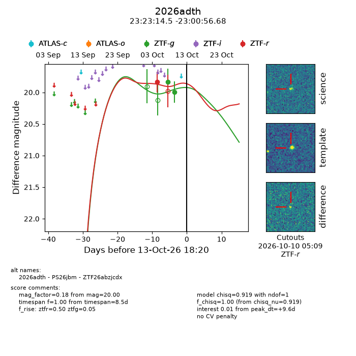
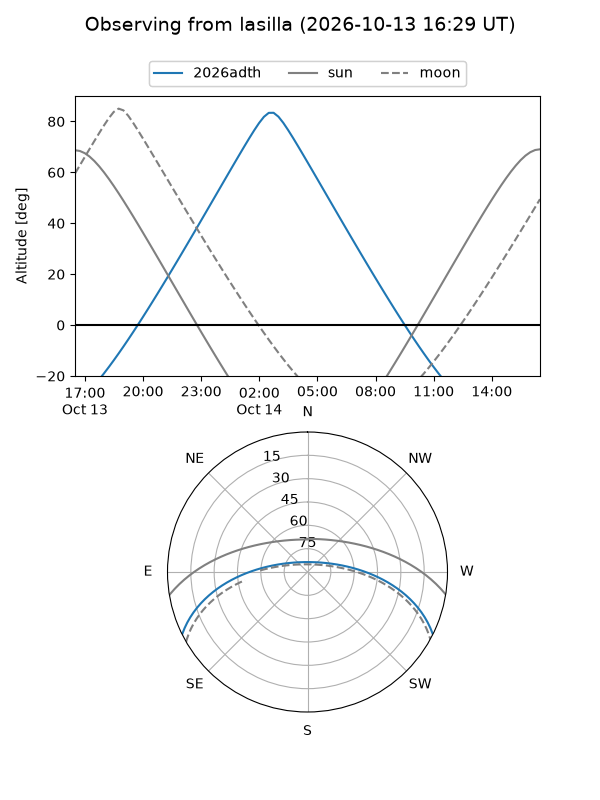
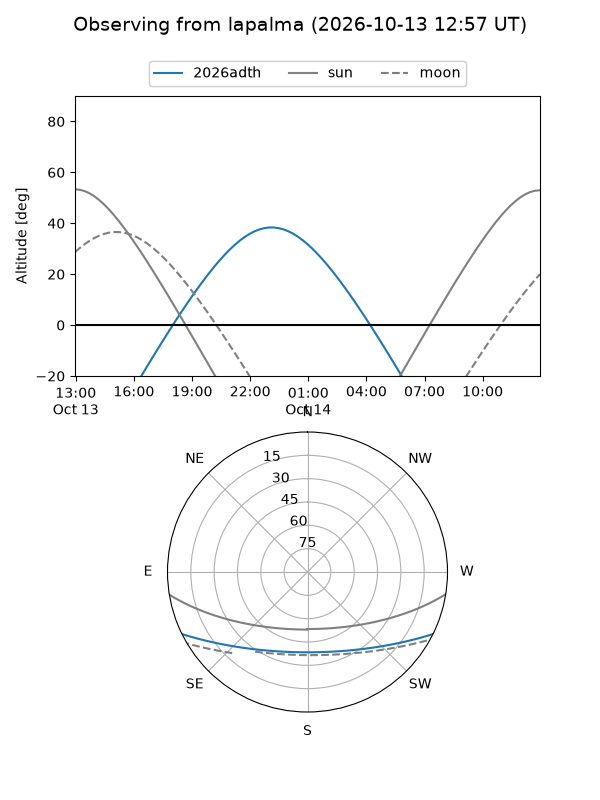
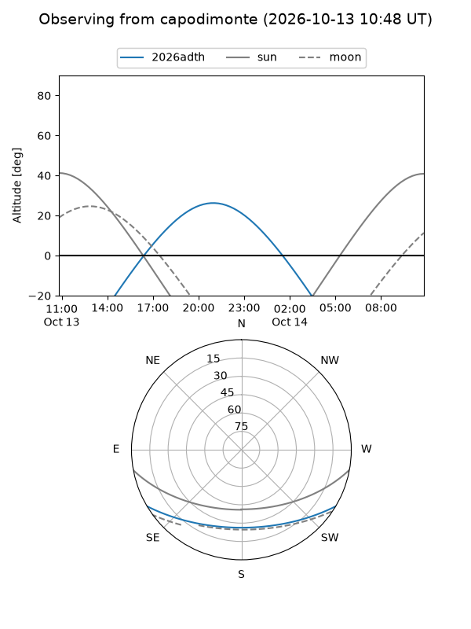
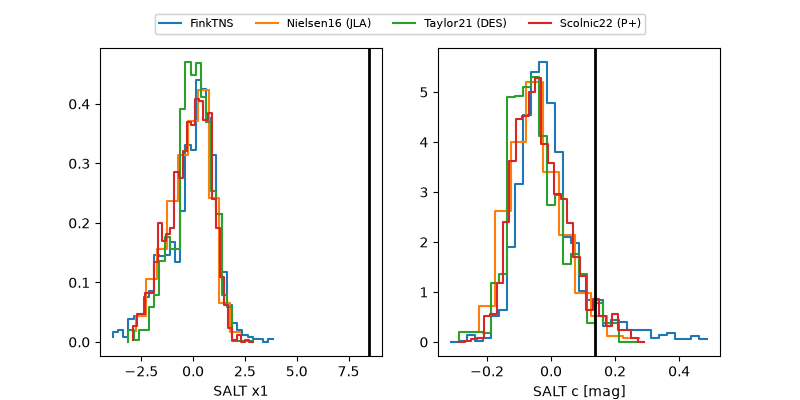

2026adth
Target 2026adth at 2026-10-14 06:21
Aliases and brokers:
FINK-ZTF: ztf.fink-portal.org/ZTF26abzjcdx
Lasair-ZTF: lasair-ztf.lsst.ac.uk/objects/ZTF26abzjcdx
ALeRCE-ZTF: alerce.online/object/ZTF26abzjcdx
YSE-PZ: ziggy.ucolick.org/yse/transient_detail/2026adth
TNS name: wis-tns.org/object/2026adth
Direct TNS query: direct search
alt names
ZTF26abzjcdx (ztf,fink_ztf)
2026adth (tns,yse)
PS26jbm (panstarrs)
Coordinates:
equatorial (ra, dec) = 350.8105,-23.01574
equatorial (HMS+DMS) = 23:23:14.51,-23:00:56.68
galactic (l, b) = (39.7025,-69.63843)
Flags:
peak dt: +10.1
Photometry:
last ztfg=20.00, ztfr=19.84
2 ztfg, 1 ztfr detections
Lightcurve

Visibility



Additional plots
